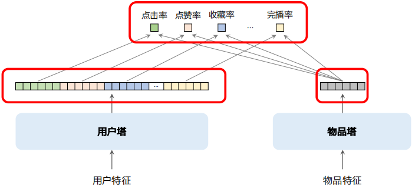
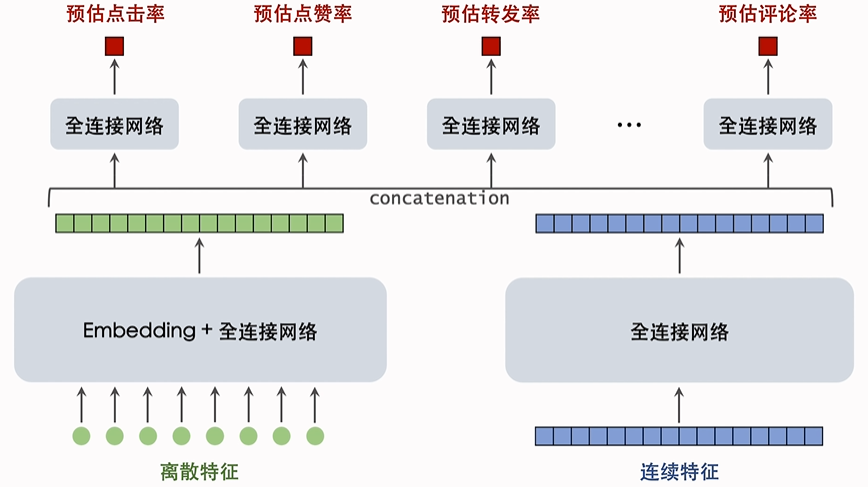
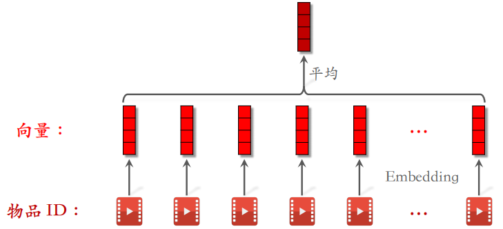
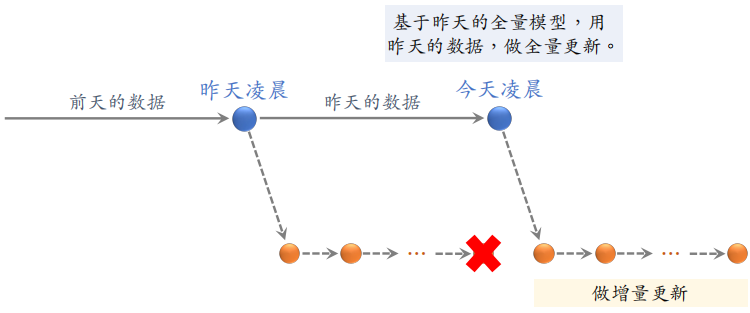
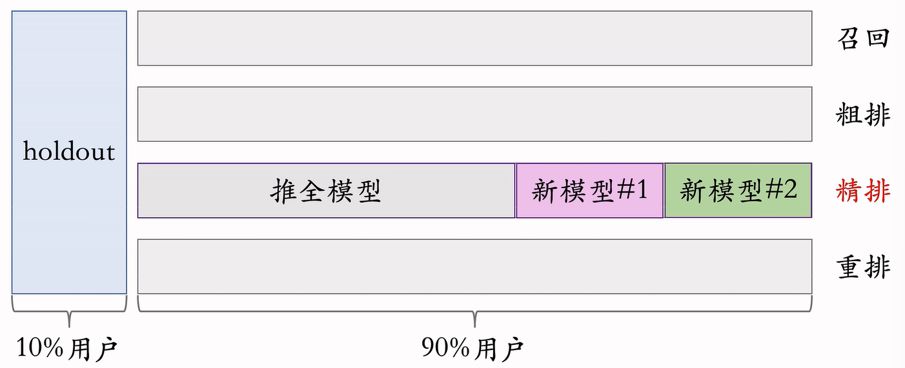

WSS推荐系统学习笔记11：涨指标的方法1
1 概述
1.1 推荐系统的评价指标
日活用户数（DAU）和留存是最核⼼的指标，目前工业界最常用 LT7 和 LT30 衡量留存。
假设某用户今天（）登录 APP，未来 7 天（）中有 4 天登录 APP，那么该用户今天（）的 LT7 等于 4。对于所有今天登录的用户，取 LT7 的平均就是整个 APP 今天的 LT7指标。LT30 的定义也是类似的，很显然有 和 。
像抖音小红书这样的推荐系统，算法工程师最重要的目标就是提升 LT。LT 的增长通常意味着用户体验提升（除非 LT 增长且 DAU下降）。假设 APP 禁止低活用户登录，则 DAU 下降，LT 增长。由于 LT 存在这种问题，所以如果模型或者策略的 LT 有所提升，还要看一下 DAU，要确保 DAU 不下降。
其他核⼼指标：用户使用时长、总阅读数（即总点击数）、总曝光数。这些指标的重要性低于 DAU 和留存。比如时长增长，LT 通常会增长。但是时长增长，阅读数、曝光数可能会下降。
非核⼼指标：点击率、交互率、等等。这些指标下跌也没有关系，只要核心指标上涨就行。对于 UGC 平台，物品都是普通用户创作的，UGC 平台会把发布量和发布渗透率也是核⼼指标。
1.2 涨指标的方法有哪些
- 改进召回模型，添加新的召回模型。
- 改进粗排和精排模型。
- 提升召回、粗排、精排中的多样性。
- 特殊对待新用户、低活用户等特殊⼈群。
- 利用关注、转发、评论这三种交互行为。
前两种方法主要是模型，在之前的课程中讲的比较详细。后面三部分都是工业界的经验，参考资料较少。
2 召回改进
2.1 召回模型 & 召回通道
推荐系统有⼏⼗条召回通道，它们的召回总量是固定的。总量越大，指标越好，粗排计算量越大。
双塔模型（two-tower）和 item-to-item（I2I）是最重要的两类召回模型，占据召回的大部分配额。有很多小众的模型，占据的配额很少，但很有用。在召回总量不变的前提下，添加某些召回模型可以提升核心指标。
添加新的召回模型可以涨指标，添加内容池也可以涨指标。有很多内容池，比如 30 天物品、1 天物品、6 小时物品、新用户优质内容池、分⼈群内容池。同⼀个模型可以用于多个内容池，得到多条召回通道。例如，训练一个双塔模型可以用在多个内容池上，不会增加训练的计算量。
2.2 双塔模型
2.2.1 方向1：优化正负样本
正负样本对训练双塔模型的作用非常大，是一个主要的优化点。
- 简单正样本：有点击的（用户，物品）二元组
- 简单负样本：随机组合的（用户，物品）二元组，从全体物品库中进行随机抽样
- 困难负样本：排序靠后的（用户，物品）二元组，在排序阶段被淘汰
2.2.2 方向2：改进神经网络结构
Baseline：用户塔、物品塔分别是全连接⽹络，各输出⼀个向量，分别作为用户、物品的表征。改进如下：
- 用户塔、物品塔分别用 DCN 代替全连接⽹络。
- 在用户塔中使用用户行为序列（last-n），可以对用户行为序列建模。
- 使用多向量模型代替单向量模型（标准的双塔模型也叫单向量模型）。
下图所示的是多向量双塔模型：右边是物品塔，和单向量模型没有区别。物品塔只输出一个向量，作为物品的表征。左边是用户塔，输出很多向量，每个形状都和物品塔输出的向量形状相同，可以做内积或计算余弦相似度，分别作为对点击率、点赞率和完播率的预测。
如果是单向量模型相当于做二分类，只区分正负样本，但是多向量模型有点像排序中的多目标模型。

2.2.3 方向3：改进模型的训练方法
Baseline：做⼆分类，让模型学会区分正样本和负样本。
- 结合⼆分类、batch 内负采样（对于 batch 内负采样，需要做纠偏）
- 使用⾃监督学习⽅法，让冷门物品的 Embedding 学得更好
2.3 Item-to-Item
I2I 是⼀大类模型，基于相似物品做召回。最常见的用法是 U2I2I (user → item → item)。已知用户 喜欢物品 （用户历史上交互过的物品），寻找 的相似物品 （即 I2I），将 推荐给 。
I2I 是基于相似度做召回，如何计算物品相似度？
-
ItemCF 及其变体
⼀些用户同时喜欢物品 和 ，则认为 和 相似。
ItemCF 、Online ItemCF、Swing、Online Swing 都是基于相同的思想， 线上同时使用上述 4 种 I2I 模型，各分配⼀定配额。
-
基于物品向量表征，计算向量相似度
双塔模型、图神经⽹络均可计算物品向量表征。
2.4 小众的召回模型
2.4.1 类似 I2I 的模型
- U2U2I（user → user → item）：已知用户 与 相似，且 喜欢物品 ，那么给用户 推荐物品 。
- U2A2I（user → author → item）：已知用户 喜欢作者 ，且 发布物品 ，那么给用户 推荐物品 。
- U2A2A2I（user → author → author → item）：已知用户 喜欢作者 ，且 与 相似， 发布物品 ，那么给用户 推荐物品 。
2.4.2 更复杂的模型
- Path-based Deep Network (PDN)
- Deep Retrieval
- Sparse-Interest Network (SINE)
- Multi-task Multi-view Graph Representation Learning (M2GRL)
3 排序改进
通过改进粗排和精排模型，有助于提升召回、粗排和精排中的多样性。排序模型包括粗排和精排，有以下五个部分：
- 精排模型的改进
- 粗排模型的改进
- 用户行为序列建模
- 在线学习
- ⽼汤模型
3.1 精排模型的改进
下面两个神经网络称为基座，把原始特征映射到数值向量。绿色和蓝色向量做全连接之后，同时输入到多个全连接网络，这些全连接网络通常只有两层。
精排模型的基座和上面的多目标预估都有很多可以改进的地方。

3.1.1 基座
基座的输⼊包括离散特征和连续特征，输出⼀个向量，作为多目标预估的输⼊。
- 改进 1：基座中的全连接网络加宽加深，计算量更大，预测更准确
- 改进 2：做⾃动的特征交叉，比如 bilinear 和 LHUC
- 改进 3：特征工程，比如添加统计特征、多模态内容特征，需要算法工程师根据自己的经验做特征
3.1.2 多目标预估
基于基座输出的向量，同时预估点击率等多个目标。
-
改进 1：增加新的预估目标，并把预估结果加⼊融合公式。
最标准的目标包括点击率、点赞率、收藏率、转发率、评论率、关注率、完播率……还可以寻找更多目标，比如进⼊评论区、给他⼈写的评论点赞……预估新的目标之后，把新的预估目标加入融合公式，排序的时候会用到这些目标。
-
改进 2：MMoE、PLE 等结构可能有效，但往往无效。
-
改进 3：纠正 position bias 可能有效，也可能无效。
3.2 粗排模型的改进
粗排的打分量比精排大 10 倍，那么单个物品的计算量就要相应的减少 10 倍，因此粗排模型必须够快。
- 简单模型：多向量双塔模型，同时预估点击率等多个目标。
- 复杂模型：三塔模型效果好，但工程实现难度较大。
除了改进粗排的模型结构，通常可以采用粗精排一致性建模：蒸馏精排训练粗排，让粗排与精排更⼀致。
方法1：pointwise 蒸馏。
设 是用户真实行为，设 是精排的预估，用 作为粗排拟合的目标。如果不做蒸馏，那么会直接使用 作为拟合的目标。
例如：对于点击率目标，用户有点击（），精排预估 ，则用 作为粗排拟合的点击率目标。
方法2：pairwise 或 listwise 蒸馏。
给定 个候选物品，按照精排预估做排序。做 learning to rank（LTR）训练粗排模型，让粗排拟合物品的序（而非值）。
例如，对于物品 和 ，精排预估点击率为 > 。LTR ⿎励粗排预估点击率满⾜ > ，否则有惩罚。LTR 通常使用 pairwise logistic loss 作为损失函数。
- 优点：粗精排⼀致性建模可以提升核⼼指标
- 缺点：如果精排出bug，精排预估值 有偏，会污染粗排训练数据
3.3 用户行为序列建模
在排序模型优化到一定长度之后，涨指标会越来越难。这时候涨指标最主要的途径就是用户行为序列建模。
最简单的⽅法是对物品向量取平均，作为⼀种用户特征，表示用户曾经对什么样的物品感兴趣。DIN 使用注意力机制，对物品向量做加权平均。工业界目前沿着 SIM 的⽅向发展。先用类目等属性筛选物品，然后用 DIN 对物品向量做加权平均。

接下来介绍一下改进用户行为序列建模的几个方向。
- 改进1：增加序列长度，让预测更准确，但是会增加计算成本和推理时间。增加序列长度最大的难点还是工程架构，工程架构弱的话做不到长序列。
- 改进2：筛选的方法，比如用类目、物品向量表征聚类。
具体做法如下：离线用多模态神经网络（BERT、CLIP等）提取物品内容特征，将物品表征为向量。离线将物品向量聚为 1000 类，每个物品有⼀个聚类序号，聚类通常使用层次聚类。
在线上做排序时，用户行为序列中有 个物品。某候选物品的聚类序号是 70，对 个物品做筛选，只保留聚类序号为 70 的物品。 个物品中只有数千个被保留下来。线上同时有好几种筛选⽅法，取筛选结果的并集。
- 改进3：对用户行为序列中的物品，使用 ID 以外的⼀些特征，最简单的方法是对 ID 做 Embedding。
概括：沿着 SIM 的⽅向发展，让原始的序列尽量长，然后做筛选降低序列长度，最后将筛选结果输入 DIN，对物品向量作加权平均。
3.4 在线学习

需要在凌晨做全量更新，也需要全天不间断做增量更新。在完成全量更新之后，之前增量训练得到的模型可以丢弃，然后基于全量更新得到的模型继续进行增量更新。
在线学习对推荐系统的指标提升非常大，但是也会消耗更多的算力。设在线学习需要 CPU core 的算力增量更新⼀个精排模型，那么推荐系统⼀共需要多少额外的算力给在线学习？
如果不做 AB 测试，整个推荐系统多花 1w 个 CPU 核心就够了，但是为了做 AB 测试，线上同时运行多个不同的模型。每个模型都需要做在线学习，全天 24 小时计算梯度更新模型。如果线上有 个模型，则需要 套在线学习的机器。
线上有 个模型，并非都是给测试新模型用的。 个模型中 1 个是 holdout，1 个是推全的模型， 个测试的新模型。

每套在线学习的机器成本都很大，因此 数量很小，制约模型开发迭代的效率。在线学习对指标的提升巨大，但是会制约模型开发迭代的效率。最好在模型相对成熟之后再考虑在线学习。
3.5 老汤模型
不论做不做新模型，每天都会用新产生的数据对模型做 1 epoch 的训练。久而久之，老模型训练得非常好，很难被超过。对模型做改进，重新训练，很难追上老模型……
问题 1：如何快速判断新模型结构是否优于老模型？（不需要追上线上的老模型，只需要判断新老模型谁的结构更优）
对于新、老模型结构，都随机初始化模型全连接层。Embedding 层可以是随机初始化，也可以是复用老模型训练好的参数。这样处理 Embedding 层，新老模型的区别就只是模型结构而已。
在做完模型初始化之后，用 天的数据训练新老模型（从旧到新，训练 1 epoch），如果新模型显著优于老模型，新模型很可能更优。只是比较新老模型结构谁更好，而非真正追平老模型。
问题 2：如何更快追平、超过线上的老模型？（只有几十天的数据，新模型就能追上训练上百天的老模型）
已经得出初步结论，认为新模型很可能优于老模型。用几十天的数据训练新模型，早日追平老模型。
- 方法 1：尽可能多地复用老模型训练好的 embedding 层，避免随机初始化 embedding 层（Embedding 层是对用户、物品特点的“记忆”，比全连接层学得慢）。
- 方法 2：用老模型做 teacher，蒸馏新模型（用户真实行为是 ，老模型的预测是 ，用 作为训练新模型的目标）。在训练新模型的初期做蒸馏，可以大幅加速收敛，让新模型追得更快。
3.6 总结
精排模型：改进模型基座（加宽加深、特征交叉、特征工程），改进多目标预估（增加新目标、MMoE、position bias）。
粗排模型：三塔模型（取代多向量双塔模型），粗精排⼀致性建模。
用户行为序列建模：沿着 SIM 的方向迭代升级，加长序列长度，改进筛选物品的方法。
在线学习：对指标提升大，但是会降低模型迭代升级效率。
⽼汤模型制约模型迭代升级效率，需要特殊技巧。
 微信
微信 支付宝
支付宝